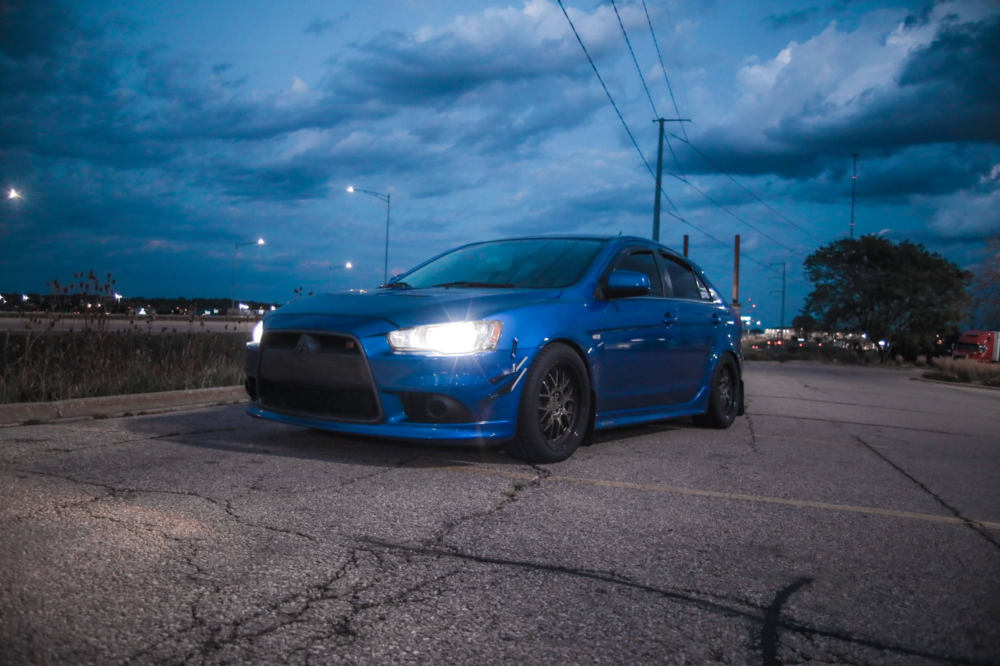
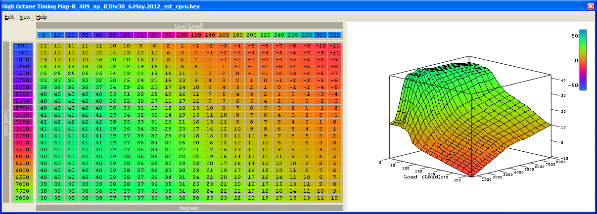
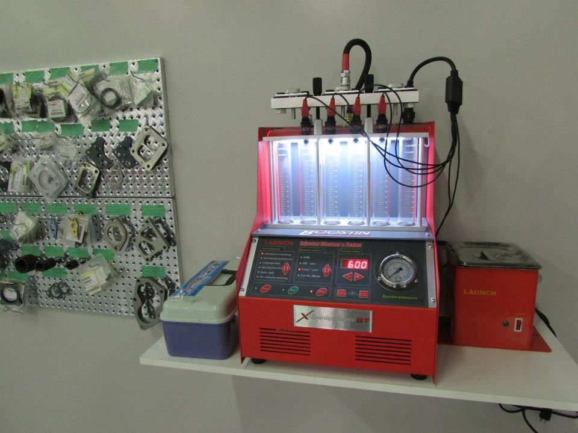

<!DOCTYPE html>
<html>
    <head>
        <meta charset="utf-8">
        <title>ECULink Tuning</title>
        <link rel="preconnect" href="https://fonts.googleapis.com">
        <link rel="preconnect" href="https://fonts.gstatic.com" crossorigin>
        <link href="https://fonts.googleapis.com/css2?family=Montserrat:wght@500&display=swap" rel="stylesheet">
        <link rel="stylesheet" type="text/css" href="css/styles.css">
    </head>
</html>
<body>
    <div class="topnav">
        <a class="active" href="#home">Home</a>
        <a href="#tune">Tuning</a>
        <a href="#fuel">Fuel Injectors</a>
        <a href="#maintenance">Maintenance</a>
    </div>
    <br>
    <header>
        <h1>ECULink <a href="#tune" title="Link to Tuning Packages">Tuning</a></h1>
    </header>
    <main>
        <br>
        <p id="title-section">
            As any gearhead knows, whenever a modification is added to your car, a tune for your car will be needed!<br>
            Here at ECULink Tuning, we specialize in tuning Mitusbushi Evo 8/9/Xs and '09+ Ralliarts!
        </p>

        <h2 id="tune">Tuning Packages Offered</h2>
        <div class="packages">
            <h3>Street Tune</h3>
            <p>$<span id="street-price"></span>+</p>
            
            <p>We offer street tuning in northern IL and southern WI on all Evo 8's, 9's, and X's and 2009+ Ralliarts<br>
                Even completely stock Evos will benefit greatly from a custom street tune. We tune not just for maximum power output, but also for reliability and drivability.
            </p>
            <br>
            <div>
                <h4>Single Map Street Tune</h4>
                <p>$<span id="single-street-price"></span></p>
                <br>
                <h4>Dual Map Street Tune</h4>
                <p>$<span id="dual-street-price"></span></p>
            </div>
        </div>
        <br>
        <div class="packages">
            <h3>Remote Tune</h3>
            <p>$<span id="remote-price"></span>+</p>
            
            <p>Whether you're across the state or across the world, we can tune your Evo through our remote tuning process, 
                also known as an E-Tune. All you need are a few basic tuning items and we can tune your Evo regardless of where you live. 
            </p>
            <br>
            <div>
                <h4>Single Map Remote Tune</h4>
                <p>$<span id="single-remote-price"></span></p>
                <br>
                <h4>Dual Map Remote Tune</h4>
                <p>$<span id="dual-remote-price"></span></p>
            </div>
        </div>
        <h2 class="spacing" id="fuel">Fuel Injector Services</h2>
        <div class="packages">
            
            <p>Proper fuel delivery is essential to the performance of any vehicle. Dirty and clogged fuel injectors will reduce your fuel economy and rob 
                horsepower. A completely stock vehicle could benefit from fuel injector cleaning and testing.
                <br><br>
                Select an option below and click the check price button to view price.
            </p>
            <select id="select">
                <option value="$16">Testing and Cleaning</option>
                <option value="$9">Testing Only</option>
            </select>
            <button onclick="getOption()">
                Check Price
            </button>
            <p>
                The price per injector:
                <span class="output"></span>
            </p>
        </div>
        <h2 class="spacing" id="maintenance">Recommended Maintenance Before Tuning</h2>
        <div class="packages">
            <p>
                Check all your fluids: <br>-Oil, Coolant, Transmission, Transfer Case, and Rear Differential. <b>Ensure that all are clean and full.</b>
            </p>
            <p>
                Boost Leak Test: <br>-This will be needed to be done before your tune. Boost leaks can cause major drivability issues and will make it impossible to tune your setup to its full potential.
            </p>
            <p>
                Fuel: <br>-If you plan on getting a Dual Map Tune on different fuels, make sure that before your tune, the vehicle is a little under a third a tank full on gas. We will be needing a near empty 
                tank when switching fuel maps and if your vehicle is near full on gas, that will extend the time needed in order to tune your vehicle. Also, if you plan to tune on E85, test the mixture from the station 
                you plan on getting most of your fuel from.
            </p>
        </div>
    </main>
    <footer class="footer">
        <p>Coded by <a href="https://github.com/daledezma/itdev-160" title="Link to my github repo">Daniel Ledezma</a></p>
    </footer>
    <script src="js/script.js"></script>
</body>